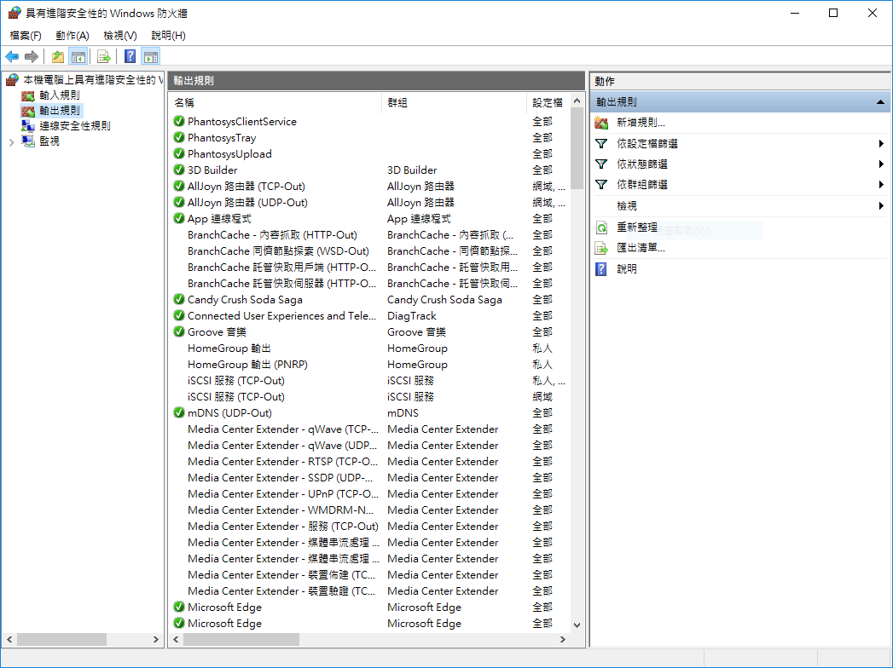
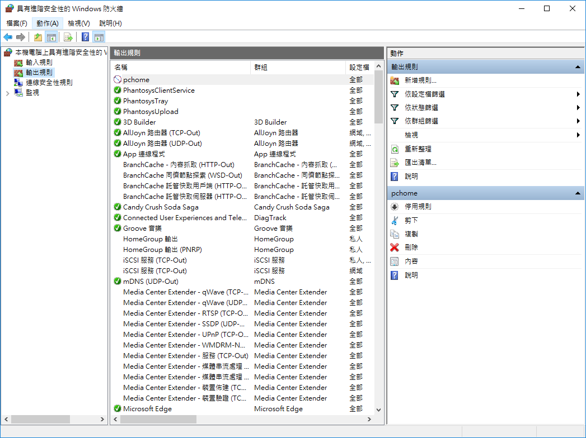
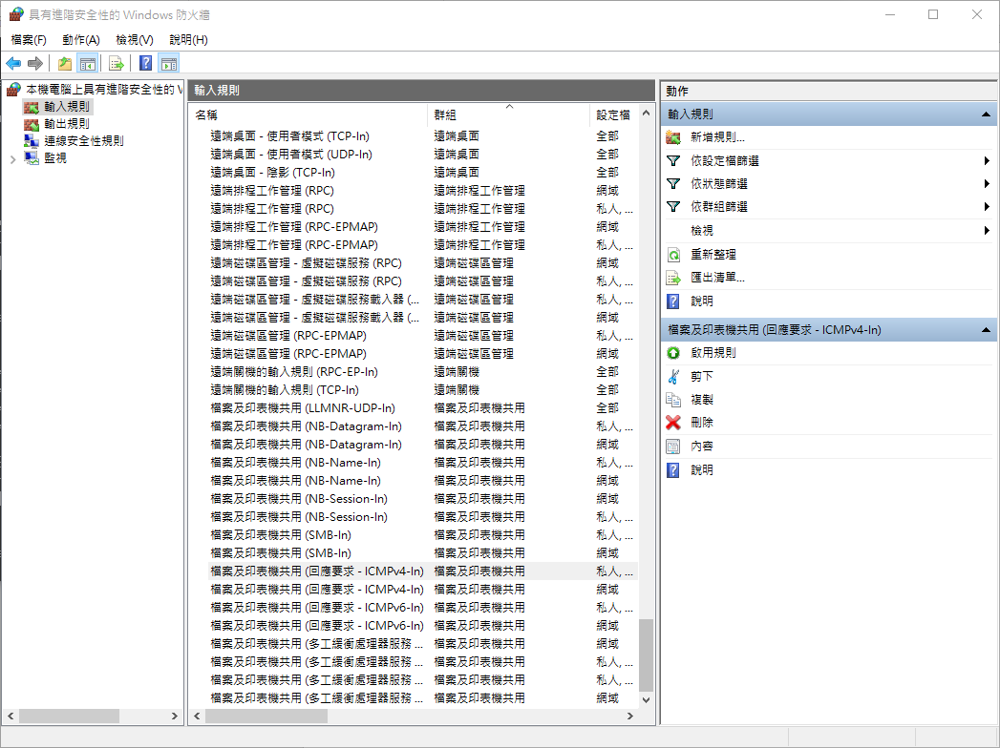
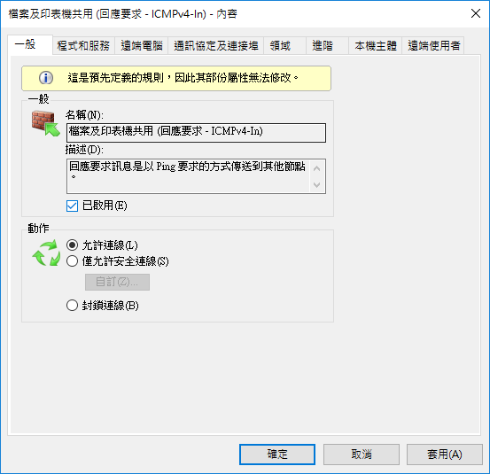
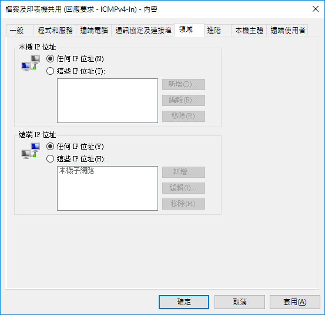
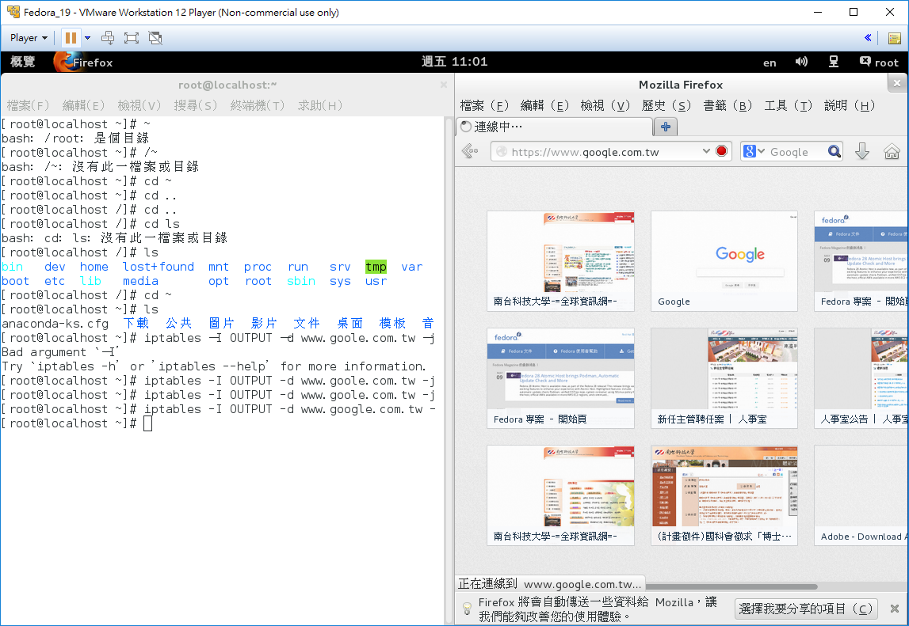
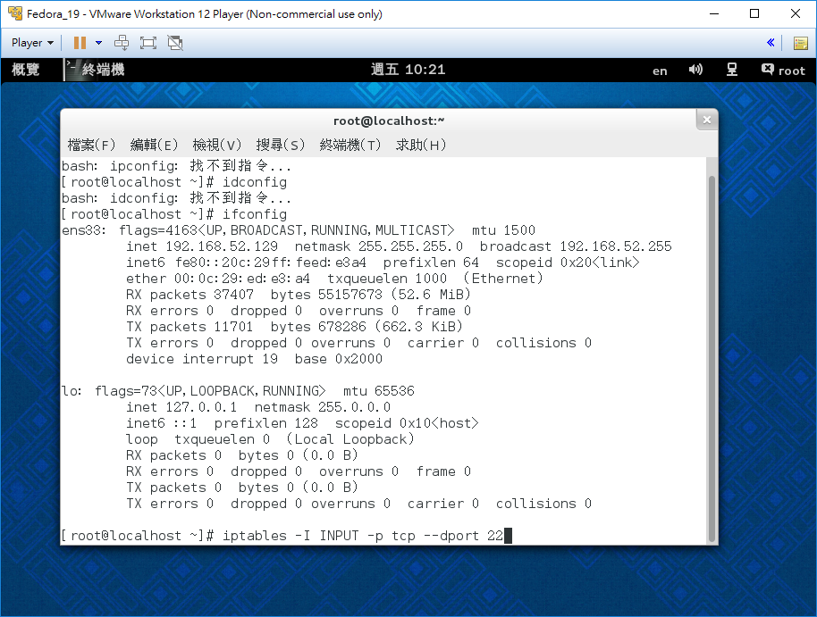
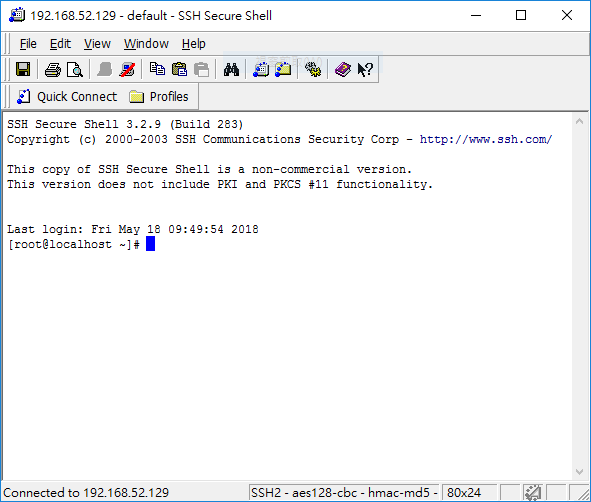
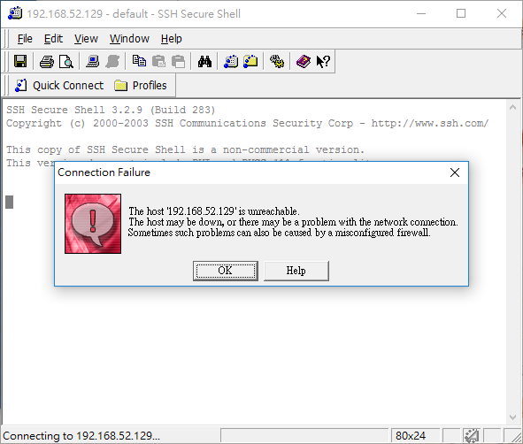

一、利用Microsoft的內建FireWall功能，終止pchome的連線 (超詳細)
step1:連線至pchome
確認可以連上pchome
step2:查pchome的IP位址
方法1: C:\>ping www.pchome.com.tw
方法2: C:\>nslookup www.pchome.com.tw
最後查出的IP為：117.18.232.133
step3:使用Microsoft的Firewall設規則
控制台>>系統及安全>>Window防火牆>>進階設定>>輸出規則>>新增規則

2.程式:所有程式
3.通訊協定:任一
4.領域：
本機IP:任何IP
遠端IP:這些IP>>新增：
117.18.232.133
117.18.232.0/24
5.動作:封鎖連線
6.設定檔:全選
7.名稱:pchome 
step4:連線phcome出現"連線封鎖"
二、在FireWall開啟狀態下 讓別人電腦可以ping到你的電腦 (超詳細)
step1:設定防火牆
開啟控制台>>系統安全性>>Windows FireWall>>進階設定>>輸入規則>>檔案及印表機共用(回應要求-ICMP-In)
step2:設定一般
勾選"已啟動"
step3:設定網域
更改為"任何IP"
step4:設定完成
三、在Linux利用Iptables中斷與google的連線 (超詳細)
step1:開啟Linux
開啟VM Ware>>概覽>>終端機
step2:輸入指令
輸入：iptables –I OUTPUT –d www.goole.com.tw –j DROP
step3:再度開啟google
使用firefox連線google
三、Linux的iptables範例 (超詳細)
step1:開啟虛擬主機
step2:用 SSH Secure Shell Client 登入虛擬主機
回到 Windows
點選 Quick Connect
| Host: | 192.168.52.129 |
|---|---|
| User: | root |
| Port: | 22 |
成功登入 
step3:到虛擬主機終端機輸入指令
# iptables -I INPUT -p tcp --dport 22 -j REJECT
'step4:回到Windows，再用SSH連線
顯示連線錯誤訊息
